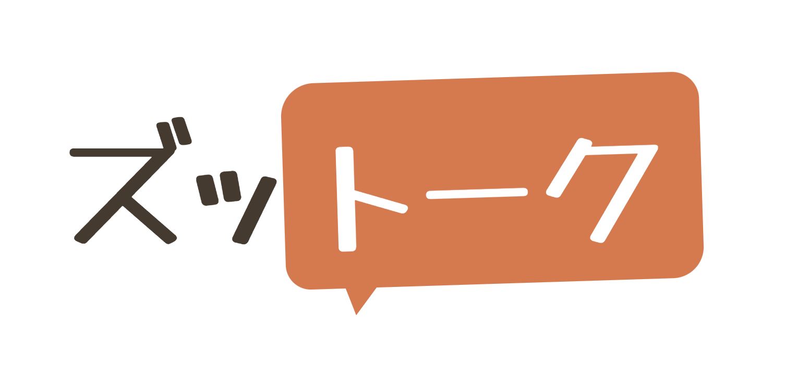

<title>Ties Match ズットーク</title>
<link rel="preconnect" href="https://fonts.googleapis.com">
<link rel="preconnect" href="https://fonts.gstatic.com" crossorigin>
<link rel="stylesheet" href="https://fonts.googleapis.com/css2?family=Zen+Maru+Gothic:wght@500;700;900&family=Zen+Kaku+Gothic+New:wght@400;500;700&display=swap">
<link rel="stylesheet" href="style.css">

<!-- ============ ナビ ============ -->
<header class="nav">
  <div class="wrap nav-in">
    <a class="brand" href="#top">
      <svg width="24" height="24" viewBox="0 0 26 26" aria-hidden="true">
        <line x1="8" y1="13" x2="18" y2="13" stroke="var(--terra)" stroke-width="1.8"/>
        <circle cx="7" cy="13" r="4.2" fill="var(--terra)"/>
        <circle cx="19" cy="13" r="4.2" fill="var(--olive)"/>
      </svg>
      <span class="brand-name">Ties Match</span>
    </a>
    <nav class="nav-links" aria-label="サイト内">
      <a href="#issue">課題</a>
      <a href="#service">ズットーク</a>
      <a href="#how">使い方</a>
      <a href="#contact">お問い合わせ</a>
    </nav>
    <a class="btn btn-line btn-sm" href="https://lin.ee/61MCH3O" target="_blank" rel="noopener">
      <svg class="line-glyph" viewBox="0 0 24 24" aria-hidden="true"><path fill="currentColor" d="M12 2C6.2 2 1.5 5.9 1.5 10.6c0 4.2 3.7 7.7 8.7 8.4.3.1.8.2.9.5.1.3.1.7 0 1l-.1.9c0 .3-.2 1 .9.6 1.1-.5 6.1-3.6 8.3-6.1 1.5-1.6 2.3-3.3 2.3-5.3C22.5 5.9 17.8 2 12 2z"/></svg>
      友だち追加
    </a>
  </div>
</header>

<main id="top">

  <!-- ============ ヒーロー ============ -->
  <section class="hero">
    <div class="hero-in">
      <div class="hero-mark">
        <svg width="26" height="26" viewBox="0 0 26 26" aria-hidden="true">
          <line x1="8" y1="13" x2="18" y2="13" stroke="var(--terra)" stroke-width="1.8"/>
          <circle cx="7" cy="13" r="4.2" fill="var(--terra)"/>
          <circle cx="19" cy="13" r="4.2" fill="var(--olive)"/>
        </svg>
        <h1 class="org">Ties Match</h1>
      </div>

      <div class="hero-rule"></div>

      
      <p class="hero-line">高齢者の孤立を解決する。</p>
    </div>
  </section>

  <!-- ============ 課題 ============ -->
  <section id="issue" class="band band-soft">
    <div class="wrap">
      <div class="sec-head reveal">
        <p class="kicker">課題</p>
        <h2>要介護になる手前で、<br>会話が消えていく</h2>
        <p class="sub">会話はできる。体もある程度元気。けれど会社や家族から少しずつ離れ、一日だれとも話さない日が増えていく——ズットークが向き合うのは、この層です。</p>
      </div>

      <div class="stats">
        <div class="stat reveal">
          <p class="fig">34<small>%</small></p>
          <p class="txt">60歳以上で孤立を実感している人の割合。約1,200万人にあたる。</p>
          <span class="src">出典：内閣府</span>
        </div>
        <div class="stat reveal">
          <p class="fig">1.6<small>万人</small></p>
          <p class="txt">1年間に発生する孤立死（推計）。</p>
          <span class="src">出典：内閣府推計（2025年）</span>
        </div>
        <div class="stat reveal">
          <p class="fig">672<small>万 → 887万世帯</small></p>
          <p class="txt">高齢者単独世帯の数。2020年から2030年にかけての推計。</p>
          <span class="src">出典：国立社会保障・人口問題研究所</span>
        </div>
        <div class="stat reveal">
          <p class="fig">1.9<small>倍</small></p>
          <p class="txt">社会的孤立がある人の死亡リスク。認知症の発症リスクは1.6倍。</p>
          <span class="src">出典：JAGES・斉藤ら　※交流機会が月1回未満の群のリスク</span>
        </div>
      </div>

      <blockquote class="motive reveal">
        <p>「高校時代に買い物難民の研究をして気づいたのは、店が遠いことや交通の不便さだけが原因ではない、ということでした。そもそも出かける気力がない、一緒に行く人がいない。物理的な距離の手前に、社会的な孤立がありました。」</p>
        <footer>Ties Match 代表　鳴海 ジロー（東京大学）</footer>
      </blockquote>
    </div>
  </section>

  <!-- ============ サービス ============ -->
  <section id="service" class="band">
    <div class="wrap">
      <div class="sec-head reveal">
        <p class="kicker">ズットーク</p>
        <h2>ズットークは、何をするか</h2>
        <p class="sub">世界一高齢者に寄り添ったAIをつくる、というのが私たちの手段です。機能はすべてLINEの中で完結し、新しいアプリの操作を覚える必要はありません。</p>
      </div>

      <div class="two">
        <div class="pillar a reveal">
          <p class="tag">手段 一</p>
          <h3>AIと話すことで、孤立感をやわらげる</h3>
          <p>毎日の会話そのものが目的です。一人ひとりの暮らしや話し方に合わせて応答します。</p>
          <ul>
            <li>テキストと音声での対話</li>
            <li>12種のゲーム（継続利用の鍵になっている機能）</li>
            <li>ニュース・天気・災害情報の案内</li>
            <li>会話回数に上限を設け、負担と運用コストを管理</li>
          </ul>
        </div>
        <div class="pillar b reveal">
          <p class="tag">手段 二</p>
          <h3>AIが、人と人とのつながりを強める</h3>
          <p>AIが会話を抱え込むのではなく、地域と家族へ橋を架けることを役割にしています。</p>
          <ul>
            <li>会話から趣味・関心を読み取り、近所の通いの場を紹介</li>
            <li>離れて暮らす家族へ、ようすのレポートを送信</li>
            <li>気になる変化があればアラートで知らせる</li>
            <li>地域ごとに情報を整備するローカライズ</li>
          </ul>
        </div>
      </div>
    </div>
  </section>

  <!-- ============ 使い方 ============ -->
  <section id="how" class="band band-soft">
    <div class="wrap">
      <div class="sec-head reveal">
        <p class="kicker">使い方</p>
        <h2>はじめるまで、三つの手順</h2>
      </div>
      <div class="steps">
        <div class="step reveal">
          <p class="no">1</p>
          <h3>LINEで友だち追加</h3>
          <p>QRコードを読み取るだけ。アプリのインストールも、アカウント作成も要りません。</p>
        </div>
        <div class="step reveal">
          <p class="no">2</p>
          <h3>いつも通りに話す</h3>
          <p>文字でも、声でも。天気の話でも、昔の話でも。ズットークが受け取り、返します。</p>
        </div>
        <div class="step reveal">
          <p class="no">3</p>
          <h3>家族と地域につながる</h3>
          <p>会話から、近所の通いの場が届きます。家族には、ようすのレポートが届きます。</p>
        </div>
      </div>
      <p class="note-line">料金・提供条件は現在検討中です。</p>
    </div>
  </section>

  <!-- ============ CTA ============ -->
  <section class="wrap">
    <div class="cta reveal">
      <h2>まずは、ご本人に一度話してみてもらってください。</h2>
      <p>LINEの友だち追加だけで始められます。</p>
      <div class="cta-row">
        <a class="btn btn-line" href="https://lin.ee/61MCH3O" target="_blank" rel="noopener">
          <svg class="line-glyph" viewBox="0 0 24 24" aria-hidden="true"><path fill="currentColor" d="M12 2C6.2 2 1.5 5.9 1.5 10.6c0 4.2 3.7 7.7 8.7 8.4.3.1.8.2.9.5.1.3.1.7 0 1l-.1.9c0 .3-.2 1 .9.6 1.1-.5 6.1-3.6 8.3-6.1 1.5-1.6 2.3-3.3 2.3-5.3C22.5 5.9 17.8 2 12 2z"/></svg>
          LINEで友だち追加
        </a>
        <a class="btn btn-ghost" href="#contact">メールで問い合わせる</a>
      </div>
    </div>
  </section>

</main>

<!-- ============ フッター ============ -->
<footer class="foot" id="contact">
  <div class="wrap">
    <div class="foot-grid">
      <div>
        <span class="brand">
          <svg width="24" height="24" viewBox="0 0 26 26" aria-hidden="true">
            <line x1="8" y1="13" x2="18" y2="13" stroke="var(--terra)" stroke-width="1.8"/>
            <circle cx="7" cy="13" r="4.2" fill="var(--terra)"/>
            <circle cx="19" cy="13" r="4.2" fill="var(--olive)"/>
          </svg>
          <span class="brand-name">Ties Match</span>
        </span>
        <p class="blurb">高齢者の孤立を解決することを目的に活動しています。ズットークは、その手段として開発しているサービスです。</p>
      </div>
      <div>
        <h4>団体情報</h4>
        <dl>
          <dt>名称</dt><dd>Ties Match</dd>
          <dt>代表</dt><dd>鳴海 ジロー</dd>
          <dt>設立</dt><dd>2026年8月</dd>
          <dt>体制</dt><dd>4名</dd>
        </dl>
      </div>
      <div>
        <h4>お問い合わせ</h4>
        <ul>
          <li class="mail"><a href="mailto:jirobee6@g.ecc.u-tokyo.ac.jp">jirobee6@g.ecc.u-tokyo.ac.jp</a></li>
          <li><a href="https://lin.ee/61MCH3O" target="_blank" rel="noopener">LINEで友だち追加</a></li>
        </ul>
      </div>
    </div>
    <p class="foot-base">本サイトに掲載した統計は各出典に基づきます。サービス内容・提供条件は変更される場合があります。</p>
  </div>
</footer>

<script>
  /* スクロールに合わせて要素をふわっと出す。
     ・JS が動かない／IntersectionObserver が無い環境では .js-reveal が付かないので、
       すべて最初から表示されたままになる（内容が隠れたままにならない）
     ・「視差を減らす」設定の端末では動かさない
     ・万一 observer が発火しなかった場合に備え、1.6 秒後にすべて表示する保険を置いている */
  (function () {
    var root = document.documentElement;
    var items = Array.prototype.slice.call(document.querySelectorAll('.reveal'));
    if (!items.length) return;

    var reduced = window.matchMedia && window.matchMedia('(prefers-reduced-motion: reduce)').matches;
    if (reduced || !('IntersectionObserver' in window)) return;

    root.classList.add('js-reveal');

    var showAll = function () {
      items.forEach(function (el) { el.classList.add('is-in'); });
    };

    var io = new IntersectionObserver(function (entries) {
      entries.forEach(function (entry) {
        if (!entry.isIntersecting) return;
        entry.target.classList.add('is-in');
        io.unobserve(entry.target);
      });
    }, { rootMargin: '0px 0px -8% 0px', threshold: 0.08 });

    items.forEach(function (el) { io.observe(el); });

    setTimeout(showAll, 1600);
  })();
</script>
